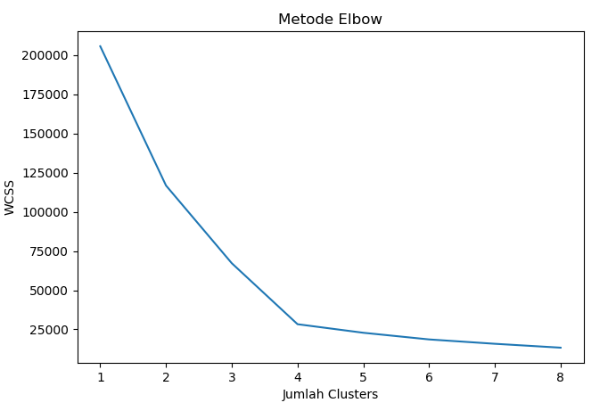
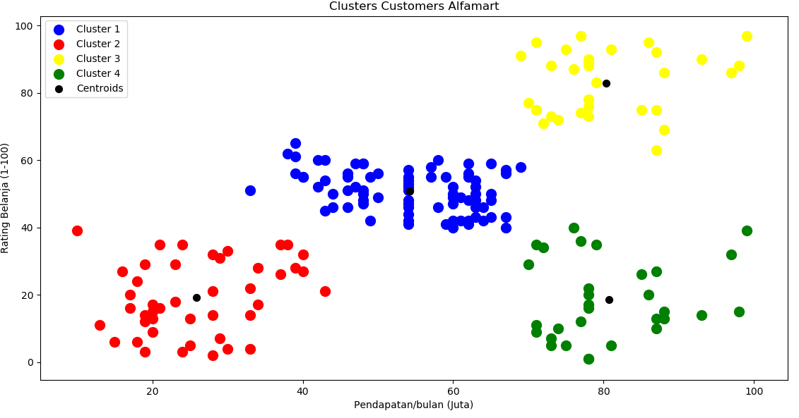

K-Means Clustering
Apa itu K-Means Clustering?
Clustering adalah metode penganalisaan data, yang sering dimasukkan sebagai salah satu metode Data Mining, yang tujuannya adalah untuk mengelompokkan data dengan karakteristik yang sama ke suatu 'wilayah' yang sama dan data dengan karakteristik yang berbeda ke 'wilayah' yang lain.
K-Means Clustering merupakan salah satu metode yang dapat digunakan untuk membagi sejumlah objek ke dalam partisi-partisi berdasarkan kategori-kategori yang ada dengan melihat titik tengah yang diberikan. Peng-cluster-an objek dilihat dari jarak objek dengan titik tengah yang paling dekat. Setelah mengetahui titik tengah terdekat, objek tersebut akan diklasifikasikan sebagai anggota dari kategori tersebut
Pada umumnya tujuan dari algoritma ini ialah membagi data atau disebut dengan mempartisi data yang ada ke dalam bentuk satu maupun lebih clusternya, membagi menjadi beberapa kelompok cluster. Pada algoritma ini bersifat menerima masukan dari berupa data tanpa adanya label kelas. Berbanding balik dengan sifat metode supervised learning yang menerima masukan dari berupa vektor data dan memiliki label data.
Metode ini akan melakukan pembagian data ke dalam satu cluster yang sama apabila ada data yang mempunyai bentuk karakteristik berbeda akan di tempatkan ke dalam cluster yang lain
Langkah - langkah K-Means Clustering
- Memilih jumlah cluster awal (K) yang ingin dibuat.
- Memilih titik secara random sebanyak K buah, di mana titik ini akan menjadi pusat (centroid) dari masing-masing kelompok (clusters).
- Dari dataset yang kita miliki, buat dataset yang terdekat dengan titik centroid sebagai bagian dari cluster tersebut. Sehingga secara total akan terbentuk clusters sebanyak K buah.
- Lakukan kalkulasi, dan tempatkan pusat centroid yang baru untuk setiap cluster-nya. Langkah ini bisa disebut juga dengan istilah penyempurnaan centroid.
- Dari dataset yang kita miliki ambil titik centroid terdekat, sehingga dataset tadi menjadi bagian dari cluster tersebut. Jika masih ada data yang berubah kelompok (pindah cluster), kembali ke langkah 4. Jika tidak, maka cluster yang terbentuk sudah baik.
Kelebihan dan Kekurangan
Kelebihan k-means :
- Mudah dilakukan saat pengimpelementasian dan di jalankan.
- Waktu yang di butuhkan untuk melakukan pembelajaran relatif lebih cepat.
- Sangat fleksibel, adaptasi yang mudah untuk di lakukan
- Sangat umum penggunaannya.
- Menggunakan prinsip yang sederhana dapat di jelaskan dalam non-statistik.
Kekurangan dari k-means :
- Sebelum algoritma di jalankan, titik K diinisialisasikan secara random sehingga pengelompokan data yang di dapatkan bisa berbeda-beda. Namun apabila nilai yang diperoleh acak untuk penginisialisasi kurang baik maka pengelompokan yang didapatkn menjadi tidak optimal.
- Apabila terjebak dalam kasus yang biasanya di sebut dengan curse of dimensionality. Hal ini pun akan terjadi apabila salah satu data untuk melakukan pelatihan mempunyai dimensi yang sangat banyak, sebagai contoh; jika ada data pelatihan yang terdiri dari 2 buah atribut saja maka dimensinya ada 2 dimensi pula, namun akan berbeda jika ada 20 atribut maka akan ada 20 dimensi yang di miliki. Adapun salah satu dari cara kerja algoritma cluster ini ialah untuk mencari jarak terdekat dari antara k titik dangan titik lainnya. Apabila ingin mencari jarak untuk antar titik dari 2 dimensi hal itu masih mudah untuk di lakukan, namun bagaimana dengan 20 buah dimensi hal tersebut akan menjadi lebih sulit untuk di lakukan pencarian jarak.
- Apabila hanya ada terdapat beberapa buah titik sampel data yang ada, maka hal yang mudah untuk melakukan penghitungan dan mencari jarak titik terdekat dengan k titik yang telah di lakukan inisialisasi yang secara acak. Namun jika ada banyak titik data, misalkan satu juta data, maka perhitungan dan pencarian titik terdekat akan sangat membutuhkan waktu yang lama. Proses tersebut dapat dipercepat namun dibutuhkan sebuah struktur data yang lebih rumit seperti kD-tree atau hashing untuk melakukan proses tersebut.
- Adanya penggunaan k buah random, tidak ada jaminan untuk menemukan kumpulan cluster yang optimal.
Studi Kasus
Seorang data scientist profesional diminta oleh klien untuk menganalisis data customers yang berkunjung ke suatu Alfamart. Mereka data pelanggan setia, namun mereka bingung cara mengelompokkan data ini, sehingga nantinya pengelompokan ini bisa mereka gunakan untuk semakin memperkuat hubungan mereka terhadap konsumen. Misal untuk penguatan marketing, strategi penawaran yang tepat, kebutuhan apa saja yang cocok bagi mereka, dll.
Kebutuhan
Sebelum memulai project sebaiknya lakukan hal - hal berikut, jika sudah silahkan bisa langsung menuju ke script program di bawah.
-
install bahasa pemrograman python, bisa anda download di sini
-
Dataset csv, bisa anda download datasetnya di sini.
-
Install numpy menggunakan
pip:
pip install numpy
- Install matplotlib menggunakan
pip:
pip install matplotlib
- Install pandas menggunakan
pip:
pip install pandas
Script Program
# Mengimpor library
import numpy as np
import matplotlib.pyplot as plt
import pandas as pd
# Mengimpor dataset
dataset = pd.read_csv('Data_Customers_Alfamart.csv')
X = dataset.iloc[:, [3, 4]].values
# Menggunakan metode elbow untuk menentukan angka cluster yang tepat
from sklearn.cluster import KMeans
wcss = []
for i in range(1, 9):
kmeans = KMeans(n_clusters = i, init = 'k-means++', random_state = 187)
kmeans.fit(X)
wcss.append(kmeans.inertia_)
plt.plot(range(1, 9), wcss)
plt.title('Metode Elbow')
plt.xlabel('Jumlah Clusters')
plt.ylabel('WCSS')
plt.show()
# Menjalankan K-Means Clustering ke dataset
kmeans = KMeans(n_clusters = 4, init = 'k-means++', random_state = 187)
y_kmeans = kmeans.fit_predict(X)
# Visualisasi hasil clusters
plt.scatter(X[y_kmeans == 0, 0], X[y_kmeans == 0, 1], s = 100, c = 'blue', label = 'Cluster 1')
plt.scatter(X[y_kmeans == 1, 0], X[y_kmeans == 1, 1], s = 100, c = 'red', label = 'Cluster 2')
plt.scatter(X[y_kmeans == 2, 0], X[y_kmeans == 2, 1], s = 100, c = 'yellow', label = 'Cluster 3')
plt.scatter(X[y_kmeans == 3, 0], X[y_kmeans == 3, 1], s = 100, c = 'green', label = 'Cluster 4')
plt.scatter(kmeans.cluster_centers_[:, 0], kmeans.cluster_centers_[:, 1], s = 50, c = 'black', label = 'Centroids')
plt.title('Clusters Customers Alfamart')
plt.xlabel('Pendapatan/bulan (Juta)')
plt.ylabel('Rating Belanja (1-100)')
plt.legend()
plt.show()
Penjelasan Script
-
Line 2 sampai 4 mengimpor library yang dibutuhkan
-
Line 7, mengimpor dataset
-
Line 8, melakukan slicing, dari dataset yang dimiliki (Data_Customers_Alfamart). Kita hanya memerlukan kolom ke 3 (Penghasilan) dan 4 (Rating Belanja) saja
-
Line 11, mengimpor library K-Means.
-
Line 12, membuat list WCSS (mempersiapkan perhitungan WCSS).
-
Line 13 adalah perintah looping, perlu diingat bahwa kita ingin melakukan looping 8 kali. Oleh karena itu script di atas ditulis range(1,9), karena angka 9 tidak diikutkan oleh python.
-
Line 14 adalah menuliskan objek kmeans untuk melakukan algoritma K-Means. Selanjutnya perintah pertama adalah KMeans (kapital K dan M), yang merupakan class dari library K-Means yang diimpor di line 11, dengan beberapa parameter n_clusters yang merupakan jumlah kluster, diikuti dengan parameter kedua init yang merupakan pemilihan jumlah K di awal (kali ini kita gunakan K++, agar tidak terkena jebakan centroid. Kemudian parameter yang terakhir adalah random_state = 187. Random state ini seperti seed pada R, yang jika dipilih 187, maka ketika kita memilih 187 di kesempatan yang berbeda, maka bilangan random yang dihasilkan akan sama.
-
Line 15 merupakan perintah agar objek kmeans di line 14, digunakan untuk mengolah data X yang sudah kita definisikan di line 8.
-
Line 16 merupakan perintah untuk menghitung WCSS dengan menuliskan perintah append setelah wcss. Append merupakan method di python untuk menambahkan objek. Algoritma wcss dituliskan dengan perintah kmeans.inertia_ (dengan underscore).
-
Line 17 merupakan perintah untuk menampilkan plot. Sumbu x pada plot adalah jumlah kluster dari 1-8, maka ditulis range(1,9). Sumbu y nya adalah skor wcss yang dihitung di line 16.
-
Line 18-20 adalah perintah plot untuk estetika, seperti nama sumbu x, sumbu y dll.
-
Line 21 adalah perintah menampilkan plotnya.
Jika benar, maka tampilan plotnya akan tampak sebagai berikut:

(Within Cluster Sum of Squares):
Hasil perhitungan WCSS dari K=1 sampai K=8
Melalui gambar di atas, dapat dilihat bahwa bentuk elbow (siku) terlihat saat jumlah kluster adalah 4. Oleh karena itu, kita tentukan bahwa jumlah K yang baik adalah 4.
Note: Jika pembaca berpendapat bahwa bentuk siku juga terlihat pada K=3, maka itu juga benar. Dalam kondisi seperti ini, di mana K=3 dan K=4 menunjukkan bentuk siku, kita pilih yang nilai K nya lebih besar, dalam hal ini K=4.
Sekarang saatnya kita memilih jumlah kluster=4. Line 24 adalah perintah melakukan K-Means clustering terhadap objek kmeans. Perintahnya mirip dengan line 14, namun kali ini parameter n_clusters diisi dengan 4.
-
Line 25 adalah melakukan prediksi seperti apa pengelompokan klusternya jika kita pilih K=4. Kita siapkan objek y_kmeans (tentu saja pemilihan nama ini bebas) dengan method bukan fit melainkan fit_predict terhadap variabel X yang sudah didefinisikan di line 8.
-
Line 28-38 menampilkan hasil clusteringnya.
-
Line 38 adalah perintah untuk menampilkan plotnya.
Jika benar, maka tampilan klusternya tampak sebagai berikut:

Melalui gambar di atas bisa dilihat pembagian data points dibagi menjadi 4 kluster, kluster 1 berwarna biru, kluster 2 berwarna merah, kluster 3 berwarna kuning, dan kluster 4 berwarna hijau. Tiap kluster juga sudah terlihat baik dan semua data points masuk ke dalam kluster masing-masing.